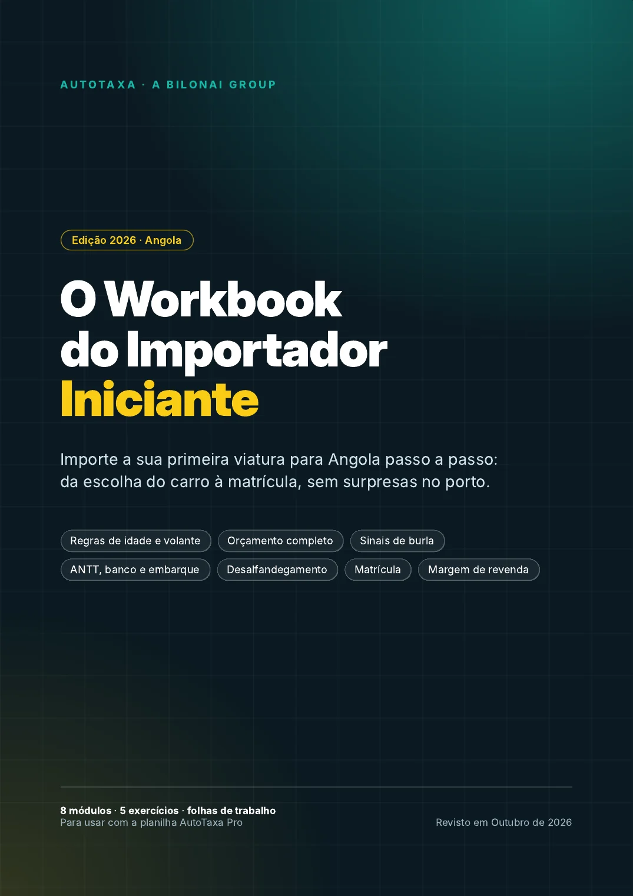
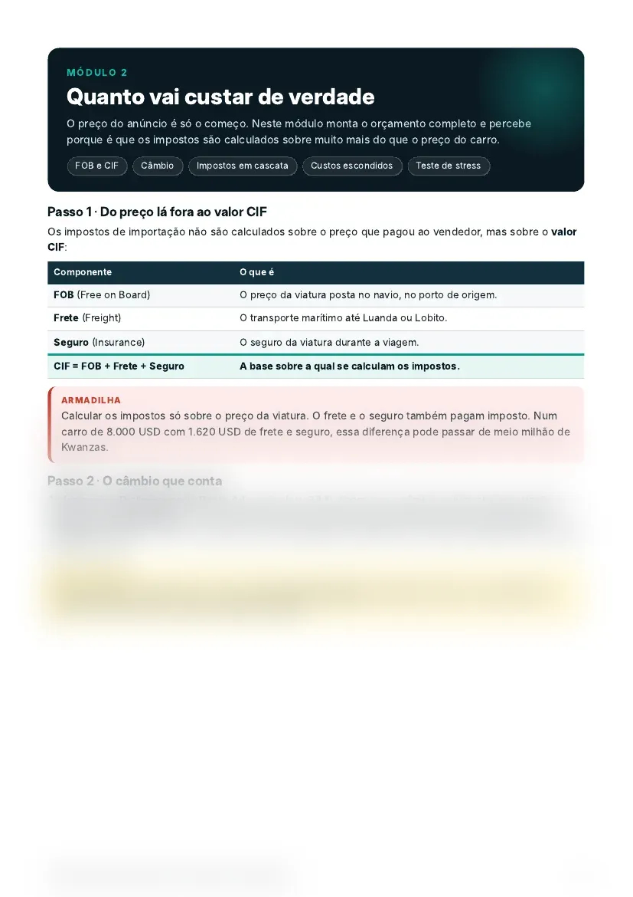
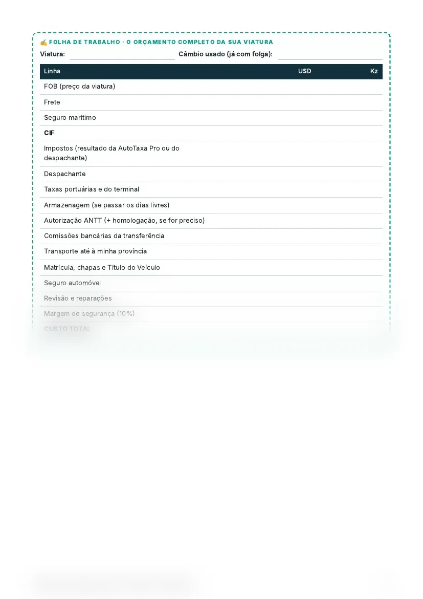
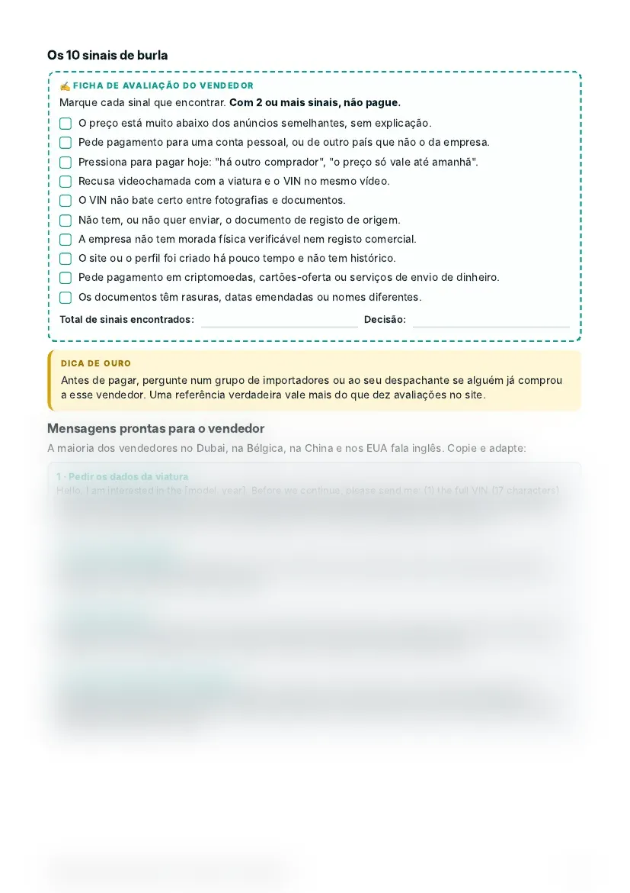
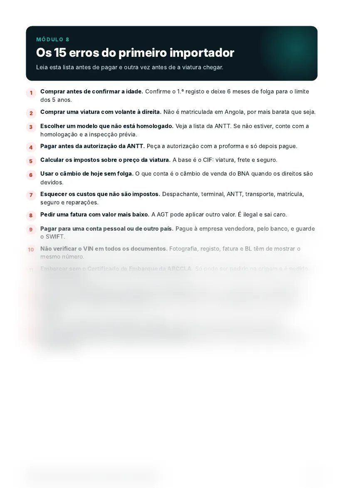

O Workbook do Importador Iniciante
A planilha faz as contas. O Workbook ensina o caminho todo, da escolha do carro à matrícula, para a sua primeira importação não ter surpresas no porto.

A planilha calcula. O Workbook ensina.
Quem importa pela primeira vez raramente falha por causa da conta. Falha por um passo que não sabia que existia.
AutoTaxa Pro
Dá-lhe o custo final em Kwanzas a partir dos dados da viatura.
Workbook
Diz-lhe o que fazer antes e depois da conta: o que pedir, a quem, em que ordem e o que verificar.
O que vai aprender e fazer
Oito módulos pela ordem em que as coisas acontecem.
- 1É possível importar este carro?Idade máxima, volante, homologação e limite por pessoa, com a lei citada.
- 2Quanto vai custar de verdadeDo FOB ao CIF, câmbio, impostos em cascata e teste de stress.
- 3Onde comprar e em quem confiarOrigens, verificação do chassi, 10 sinais de burla e mensagens prontas.
- 4Autorização, pagamento e embarqueANTT, pagamento pelo banco, Certificado de Embarque e pasta de documentos.
- 5Chegada e desalfandegamentoPerguntas ao despachante, armazenagem, prazos e levantamento no terminal.
- 6Matrícula, Título e seguroDocumentos do SIAC, Título do Veículo e o que fazer a seguir.
- 7Se a viatura é para revenderMétodo dos 3 anúncios, margem real e custos que ninguém conta.
- 8Os 15 erros do primeiro importadorA lista a ler antes de pagar e outra vez antes de a viatura chegar.
Espreite por dentro
Tabelas com números oficiais, avisos, exercícios para preencher e checklists.




Ferramentas prontas a usar
- Ficha dos 10 sinais de burla para confirmar o vendedor antes de pagar
- 4 mensagens em inglês prontas para enviar ao vendedor
- 8 perguntas para fazer ao despachante antes de o contratar
- Pasta de documentos e checklist de levantamento da viatura no terminal
- Folha de orçamento com teste de stress ao câmbio
- Calculadora de margem para quem importa para revender
- Plano de importação com todas as etapas e datas para preencher
- Glossário com os termos que vai ouvir no porto
Baseado em fontes oficiais
Cada regra vem com a lei ou a entidade que a define (Decreto Presidencial 155/20, Pauta Aduaneira, ANTT, BNA, SIAC, entre outras), listadas no final do Workbook. As leis mudam, por isso confirme sempre os valores finais com o seu despachante.
Para quem é
É para si se
- Vai importar a primeira viatura
- Quer saber os passos antes de gastar dinheiro
- Quer perceber o que o despachante faz e o que perguntar-lhe
- Pensa importar para revender
Não é para si se
- Já importa regularmente e conhece todo o processo
- Procura um despachante que trate de tudo por si
O Workbook do Importador Iniciante
- PDF de 25 páginas com 8 módulos
- 5 exercícios com respostas
- Folhas de trabalho, checklists e mensagens prontas
- Glossário e fontes oficiais
- Garantia de reembolso de 7 dias
Perguntas frequentes
O Workbook substitui a AutoTaxa Pro?
Não. A planilha faz o cálculo do custo. O Workbook explica o processo e os cuidados que a planilha não cobre. Funcionam juntos.
Em que formato vem?
PDF. Pode ler no telemóvel, no computador, ou imprimir para preencher à mão os exercícios e as folhas de trabalho.
Preciso de experiência em importação?
Não. Foi escrito para quem vai importar pela primeira vez, com os termos explicados à medida que aparecem.
Os valores e taxas estão garantidos?
As regras e taxas oficiais vêm indicadas com a fonte e a data da consulta. Os exemplos de cálculo usam taxas ilustrativas. Antes de pagar no exterior, confirme o código pautal e os valores com o seu despachante.
Serve para revender?
Sim. Há um módulo sobre revenda, com o método dos 3 anúncios e a folha de margem.
Como recebo?
O acesso é digital e imediato, enviado para o email ou contacto indicado no checkout.
E se eu não gostar?
Tem 7 dias para pedir o reembolso integral, sem precisar de explicar o motivo, pelo WhatsApp ou por email.